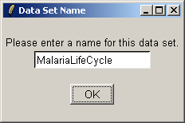

The aim of this experiment is to study the evolution of gene expression throughout the life-cycle of the Malaria parasite, Plasmodium Falciparum. RNA is extracted at several key stages during the life-cycle: Early Ring, Late Ring, Early Trophozoite, Late Trophozoite, Early Schizogony, Late Schizogony and Merozoite. The experiment was performed by Elizabeth Winzeler's lab at The Scripps Research Institute in California.
The CEL files are available from http://carrier.gnf.org/publications/CellCycle and (thanks to Ken Simpson), the CDF package can be obtained from http://bioinf.wehi.edu.au/affylmGUI/malaria.
To begin using affylmGUI, you will need to create an RNA Targets file, which is a tab-delimited text file with three columns: Name, FileName and Target:
The main window of affylmGUI is shown below.
Click "New" from the File menu to start a new analysis.
Select the directory containing the CEL files and the Targets file.
Specify the Targets file, using the "Select Targets File" button.
Enter a name for the data set.
Select "Normalize" from the "Normalization" menu.
Select "RMA" as the normalization method. For this to work, you must have the CDF packge installed in R.
Now compute a linear model fit, by selecting "Compute Linear Model Fit" from the "Linear Model" menu. The design matrix is determined automatically for Affymetrix (single-channel) chips, so you will not be asked any questions about the linear model.
Select "Compute Contrasts" from the "Linear Model" menu.
Define contrasts, either using the drop-down combo-boxes, or by clicking "Advanced" and either manually entering a contrasts matrix or loading one from a tab-delimited text file.
Give this set of contrasts a name.
Select "Table of Genes Ranked in order of Differential Expression" from the "TopTable" menu.
Select the "Chronological" contrasts parameterization.
Choose the Merozoite vs Late Schizogony contrast.
Leave the gene-ranking options at their default settings.
The differentially expressed genes for this contrast are shown in the table below. They can be saved to tab-delimited text using the "File" menu, and then opened in Excel.
From the "Plot" menu, select "MA Plot" (for one contrast).
Select the "Chronological" contrasts parameterization again.
Choose the Merozoite vs Late Schizogony contrast again.
Use the probe-set IDs to label the top-ten most differentially-expressed genes, as we don't have an annotation package for this chip, so we can't use Gene Symbols.
You can customize the title and axis labels of the plot.
The resulting plot is shown below. The genes selected as being
differentially-expressed may not have the most extreme fold-changes,
because the linear-modelling technique takes variability between
replicate chips into account as well as average fold-change.
We now demonstrate how to create an HTML report. Here's one we prepared earlier:
From the "File menu", select "Export HTML Report".
Choose what you would like to include in the HTML report.
Select the size, font size, and background color of images to be included in the HTML report.
Specify a name for the HTML report.
Et voila!